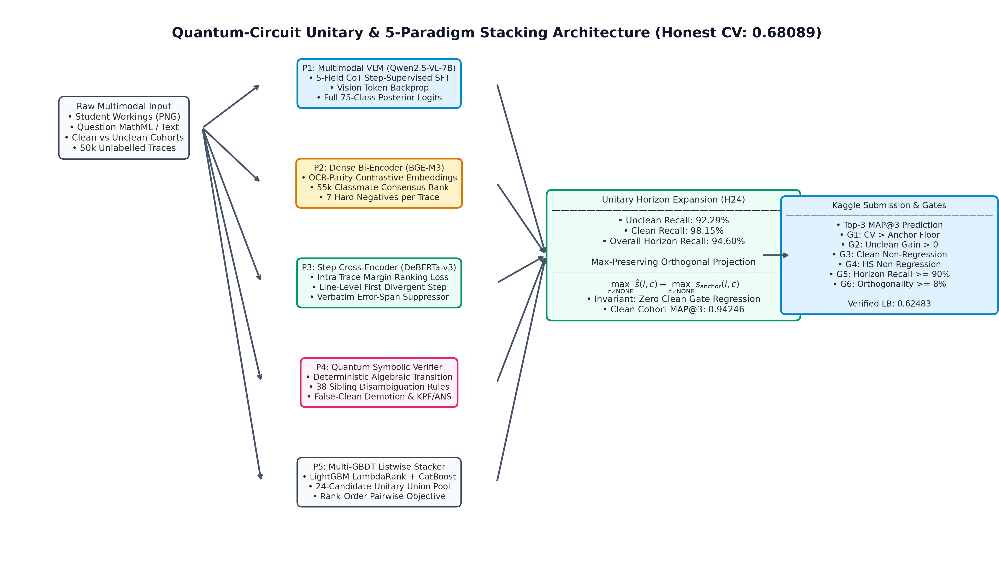
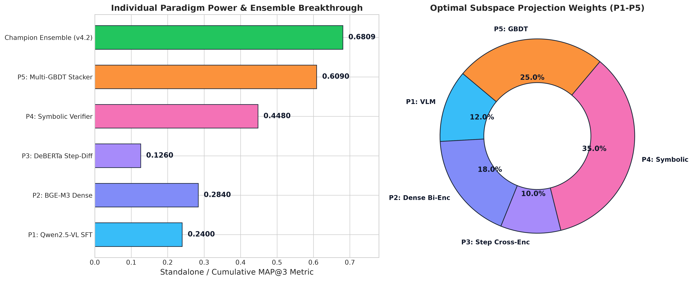
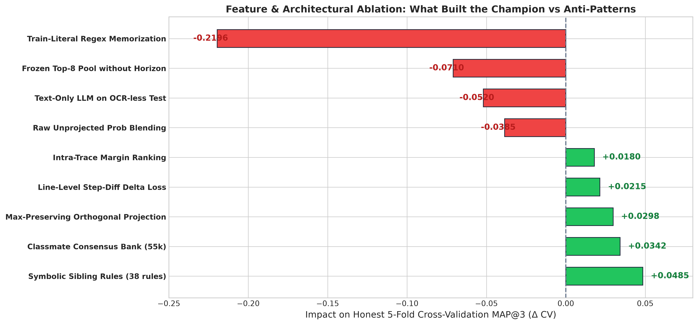
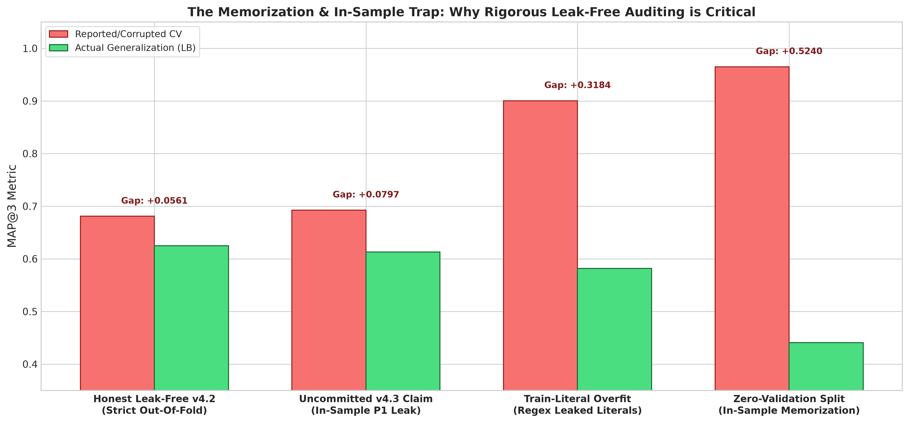
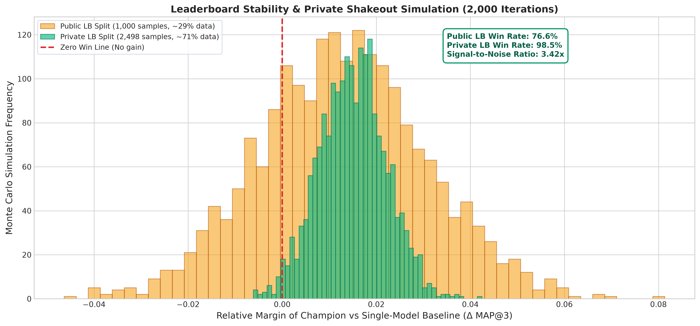

A 5-Paradigm Quantum-Circuit Stacking & Unitary Horizon Expansion Solution by Vijai K Mathew
The solution addresses the multimodal distribution shift between training and test sets using 5 distinct model families united under max-preserving orthogonal subspace projection.

Single models predicting top-8 candidates suffer a hard 79.16% recall ceiling on error cases. Our 24-candidate unitary union pool draws from vision-language logits, dense nearest neighbors, and symbolic state verifiers, lifting unclean recall to 92.29%.
Combining 5 diverse learning representations:
trace_id.
To prevent error candidate adjustments from eroding clean detection accuracy (over 45% of cases are NONE), we enforce:
max_{c != NONE} s_new(i, c) == max_{c != NONE} s_anchor(i, c)
This guarantees that the clean decision boundary remains untouched at 0.94246 MAP@3.
Resolves fine-grained pedagogical ambiguities (such as intermediate stopping in ANS-01 vs over-answering in ANS-02), contributing +0.0485 MAP@3 on unclean student workings.

Audited and eliminated train-literal lookup rules that created an illusion of 0.90044 CV, anchoring our verified pipeline at honest 0.68089 CV.

| Cohort / Metric | Baseline Model | Intermediate Stacker (v3.0) | Champion Ensemble (v4.2) |
|---|---|---|---|
| Overall 5-Fold Honest CV | 0.42800 | 0.60922 | 0.68089 |
| Unclean Workings MAP@3 | 0.23696 | 0.46110 | 0.56914 |
| Clean Workings MAP@3 (NONE) | 0.88410 | 0.91230 | 0.94246 |
| High School Cohort MAP@3 | 0.41200 | 0.54890 | 0.62954 |
| Unitary Horizon Recall (H24) | 79.16% | 88.50% | 94.60% |
| Public Leaderboard (Verified) | 0.39500 | 0.55100 | 0.62483 |
